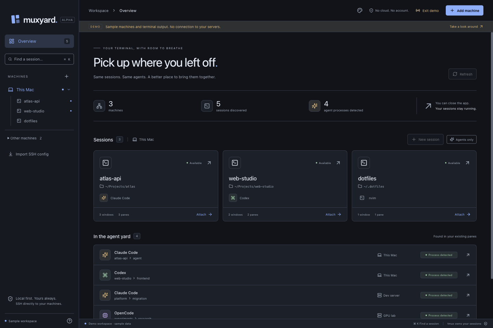
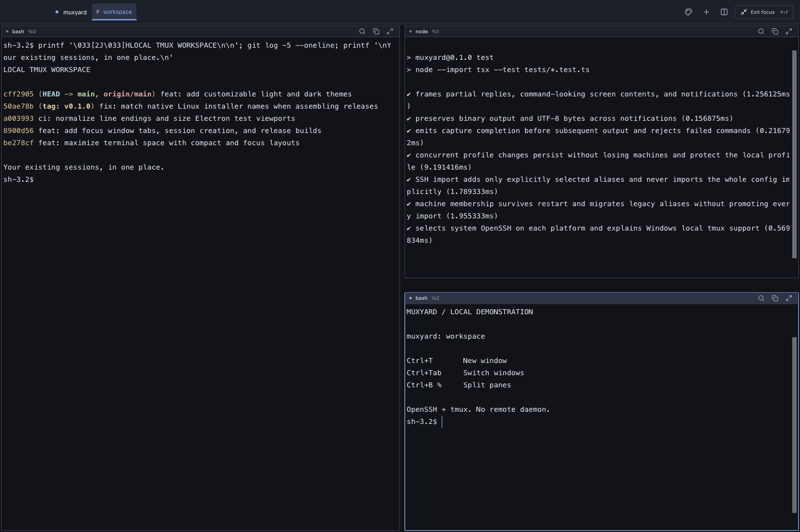

Already running?
Already home.
Attach the sessions on your laptop or SSH machine. Keep your config, your tools, and your running processes. There is nothing to migrate.
A DESKTOP HOME FOR YOUR EXISTING SESSIONS
The sessions you already have. The agents you already run.
One thoughtful workspace, locally or over SSH.
No account. No cloud relay. No remote daemon.
 YOUR WORKSPACE,
REFRAMEDCurrent source preview
YOUR WORKSPACE,
REFRAMEDCurrent source preview

Real app UI with labeled demo data. Theme customization is available in the source build and is coming to the next packaged preview.
A BETTER VIEW. THE SAME WORKFLOW.
Tmux keeps doing what it does best. Muxyard makes it easier to see where you left off.
Attach the sessions on your laptop or SSH machine. Keep your config, your tools, and your running processes. There is nothing to migrate.
Switch windows and panes with the mouse. Create a session, open a new window with Ctrl T, or split a pane. Your terminal is still a terminal.
Detach Muxyard’s client when you are done. Tmux owns the session and its processes, ready for you to pick up again.
MORE TERMINAL. LESS CHROME.
Collapse the management panels, or enter focus mode. A single compact strip keeps your window tabs one click away.
Find Claude Code, Codex, and other coding tools by the process running in a pane. Then work in the real terminal, with your tools’ own interface.

BRING YOUR OWN SERVER
Import the SSH aliases you choose, connect to a machine, and open an existing session. No extra Muxyard software runs on your server.
Key authentication and host verification use system OpenSSH. Your credentials stay with your existing SSH setup.
Read the connection guide# Verify your existing SSH connection
ssh dev-server
# On the server, list your sessions
tmux ls
# Then choose the session in Muxyard.
# No sessions yet? Create one in the app.Requires tmux on the host and SSH key authentication for remote machines.
YOUR NEXT WORKSPACE
For Macs with M-series chips.
DMG installer or ZIP archive.
Preview: ad-hoc signed, not notarized. macOS may show a trust warning.
For Macs with Intel processors.
DMG installer or ZIP archive.
Preview: ad-hoc signed, not notarized. macOS may show a trust warning.
EXE installer. System OpenSSH Client required.
Unsigned preview. Remote tmux over SSH; local tmux and WSL are not integrated.
DEB for Ubuntu 24.04.
AppImage also available.
OpenSSH required. Install tmux for local sessions. Other distributions need validation.
Prefer to build it yourself? Start with the source. macOS and Windows builds currently carry preview signing limitations.
A FEW THINGS TO KNOW
No. It attaches to real tmux sessions and leaves tmux responsible for process lifetime and layout. Existing shell commands and other tmux clients continue to work. Selecting a window can change the active window seen by another client of that session.
Only SSH and tmux. Muxyard uses system OpenSSH, including your aliases, keys, and jump hosts. Verify the host key and key authentication in your normal terminal first.
It recognizes common agent executable names reported by tmux. It does not claim to know task progress or whether an agent needs approval. You interact with the agent in its own terminal.
Muxyard closes its own clients, leaving tmux and the underlying processes running. Your tmux configuration still applies; settings such as destroy-unattached can intentionally end a session.
Starting with v0.1.1, Muxyard checks for releases and shows a compact reminder. Windows installers and Linux AppImages support in-app downloads and a restart to install. Current Mac builds use a DMG download; DEB users update through their package manager. Updates never force a restart or hot-swap your terminal.
Local tmux, pane navigation, and packaged macOS behavior have automated coverage. Windows receives packaged smoke tests and Linux receives build and tmux integration checks. Real SSH setups, sleep/wake recovery, and complex agent TUIs still need broader validation. Classic terminal is available for full tmux key bindings.
Open source. Local first. Yours to shape.